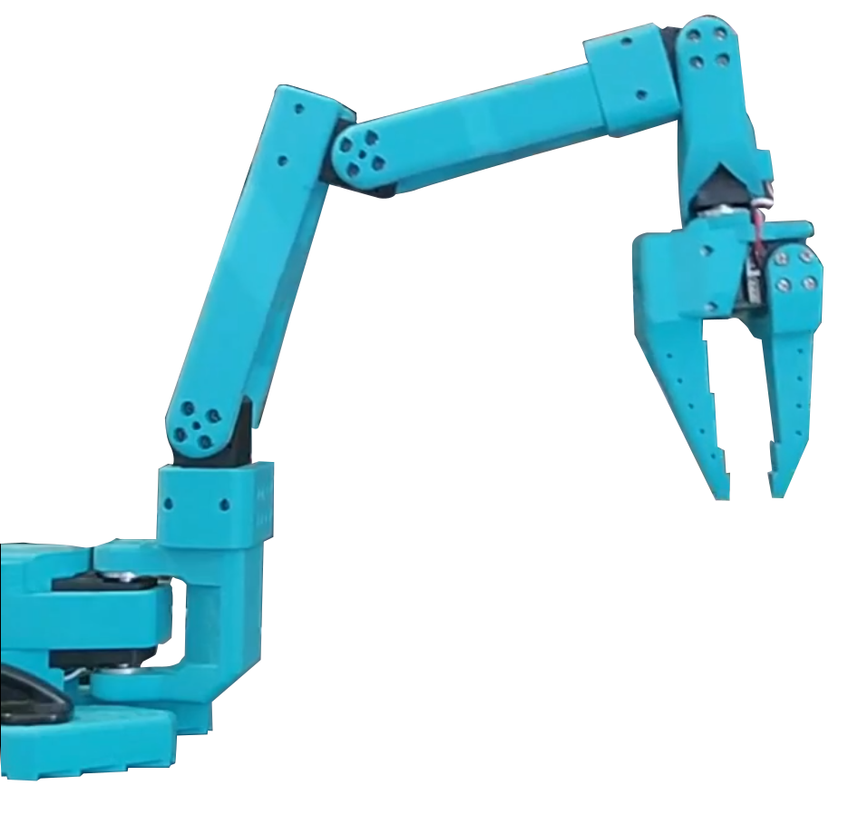
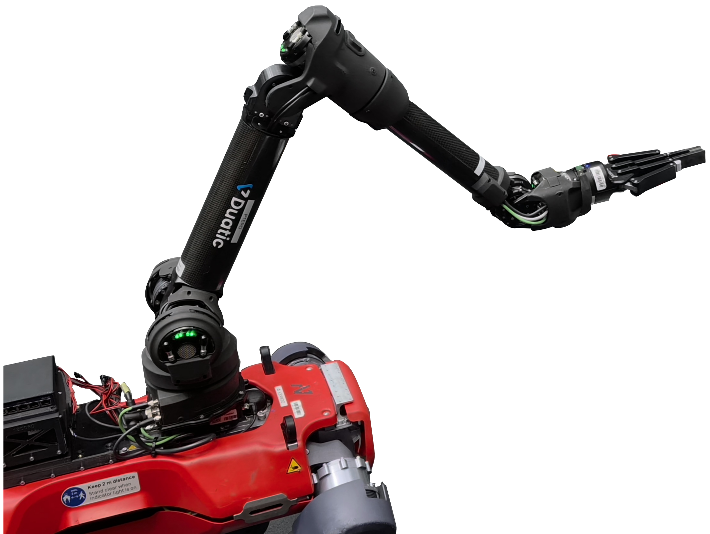

HiveBoard: An Open, Modular, 3D-Printed Benchmark of Industrial Mechanisms for Robotic and Prosthetic Manipulation
Abstract
Manipulation is mostly benchmarked on free objects, through grasping, pick-and-place, and assembly of loose parts. The mechanisms that make manipulation useful in the world are not free objects: a valve resists rotation, a screw advances only along its thread, a lock opens only after a key is inserted and turned. Performance on such constrained, force-dependent, often multi-step devices is poorly predicted by grasping scores, and the physical benchmarks that do cover mechanisms are built from purchased components, which makes them hard to reproduce or modify. We present HiveBoard, an open, modular, and accessible, fully 3D-printed benchmark that lets any laboratory evaluate grippers, hands, and manipulation policies on functional mechanisms. A hexagonal honeycomb base accepts 13 interchangeable attachments modeled on industrial fittings and grouped into three skill categories — torque, precision, and composed assembly — all fully functional, printable on consumer-grade FDM printers, and released with articulated URDF and USD models for direct import into common simulators. A cross-laboratory validation across five manipulation systems, from quadruped- and fixed-base teleoperated arms to a wearable anthropomorphic prosthetic hand, shows that the board produces a broad difficulty gradient and that different embodiments fail on different attachments for interpretable, hardware-specific reasons.





Torque Tasks
A ball valve, two gate valves, and a circuit breaker. A four-piece snap-on friction ring set modulates the breakaway torque of the ball valve without printing a second one.
Precision Tasks
A light bulb socket, M8 and M30 threaded fasteners, and a peg-insertion plate with 8 mm threaded pins that demand tight-clearance alignment followed by sustained axial rotation.
Composed Assembly
A covered push button, a key-and-lock mechanism, a sliding drawer, and a two-cell shock absorber. Each requires several sub-actions and is scored stage by stage, so partial competence is visible in the data.
Interactive 3D Benchmark
Explore the HiveBoard interactively in 3D. The base is a seven-cell hexagonal honeycomb in which every cell is an open frame that accepts an attachment through a shared press-fit interface, with no fasteners required. Rotate the perspective, snap attachments into free cells, and compose the evaluation scene you intend to print, in the large, medium, or small board version.
Interactive 3D Benchmark Explorer
Click to interact with the modular boards and tasks
Modules & Specifications
The library contains 13 functional attachments in three skill categories. Select a category below to compare each printed part with its digital twin and review the success criterion, timeout, and stage decomposition used by the evaluation protocol.

Loading...
| Parameter | Value |
|---|
Simulation Compatibility
Every attachment and the base are released as articulated CAD assets, organized per assembly with URDF descriptions, USD exports, and OBJ visual and collision meshes, so the same task can be run physically or in simulation.
MuJoCo
Assets verified to load, with every joint articulating through its physical range and no self-intersecting collision geometry at rest.
PyBullet
URDF assets verified to load and articulate, ready for training and ablation of learning-based manipulation policies.
Isaac Sim
USD assets verified to load, including the friction-ring configuration and the honeycomb base as a full board or a single panel for scene composition.
ROS-based
The same URDF descriptions and OBJ visual and collision meshes import into standard ROS 2 and Gazebo pipelines.
Video Demonstrations
Recorded trials from the cross-laboratory validation. Each laboratory printed the board from the released files and ran the same protocol on its own hardware, so a single attachment can be compared across a quadruped-mounted gripper, a legged manipulator commanded through virtual reality, a tabletop arm, and a prosthetic hand worn on an operator’s forearm.
Platform A · Spot with Spot Arm
Platform B · LeRobot SO-101
Platform C · ANYmal with DynaArm
Platform D · UR10 with Robotiq gripper Soon
Platform E · Macao Prosthetic Hand
Simulations Soon
Results
Each laboratory prints the board from the released files and runs the same protocol on its own hardware: five recorded trials per attachment, a fixed neutral start pose, per-attachment timeouts, no scripted assistance. Select any cell, platform, or attachment to see what happened in those trials.
Success rates carry 95% Wilson confidence intervals over N = 5 trials per cell. The intervals are wide by design: this is a per-laboratory reproducibility check, not a high-resolution ranking. Platform B (LeRobot SO-101) and Platform D (UR10 with Robotiq gripper) are still running the protocol.
Same eight, same five
A tablet-teleoperated quadruped arm and a VR-driven legged manipulator share no hardware, yet complete an identical set of eight attachments and fail on an identical five — for different logged reasons.
Fingers open what jaws cannot
The drawer's recessed handle and the shock-absorber pin defeat both parallel-jaw grippers in every trial, and the worn prosthetic hand clears both.
The small threads stop everyone
The M8 fastener and the free peg — the two smallest threaded parts in the library — are unsolved by all three reporting platforms, at 0/5 each.
13
Functional attachments in three skill categories, on one shared hexagonal interface
195
Recorded trials so far, 65 per reporting platform, under one fixed protocol
1.6–103 s
Span of median completion times, from the circuit breaker to the M30 thread
0
Purchased parts, metal inserts, or post-machining steps needed to reproduce the board
Citation
@article{hiveboard2026,
title = {HiveBoard: An Open, Modular, 3D-Printed Benchmark of Industrial Mechanisms
for Robotic and Prosthetic Manipulation},
author = {<author list to be released with the paper>},
journal = {<under review>},
year = {2026},
url = {https://github.com/EESC-LabRoM/HiveBoard}
}Acknowledgments
HiveBoard, the CAD library, the evaluation protocol, and the logging templates are released under a permissive license at github.com/EESC-LabRoM/HiveBoard. We thank the collaborating laboratories that printed the board locally and ran the protocol on their own manipulation systems for the cross-laboratory validation reported here.
[Funding information and full acknowledgments to be added.]